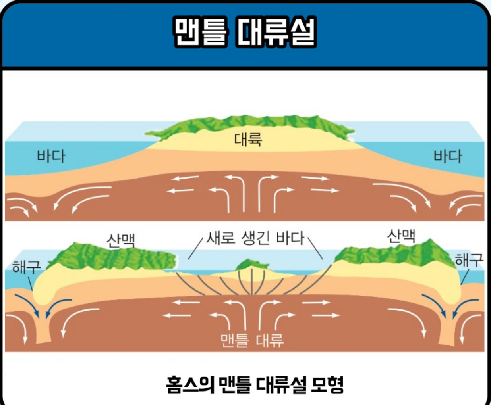
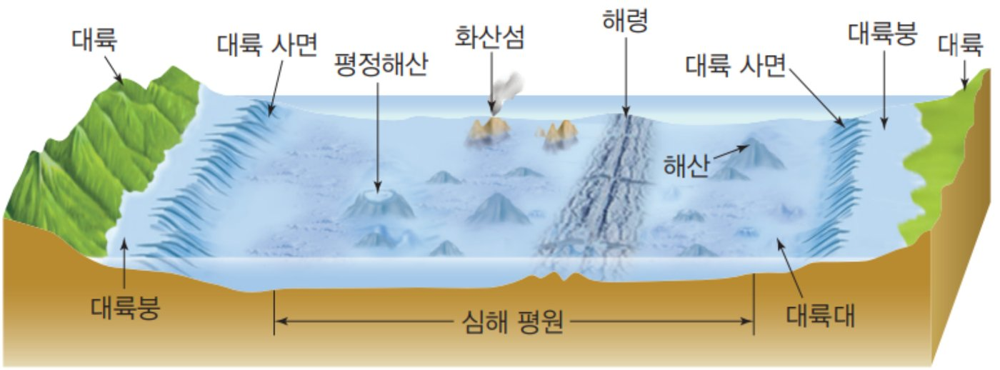
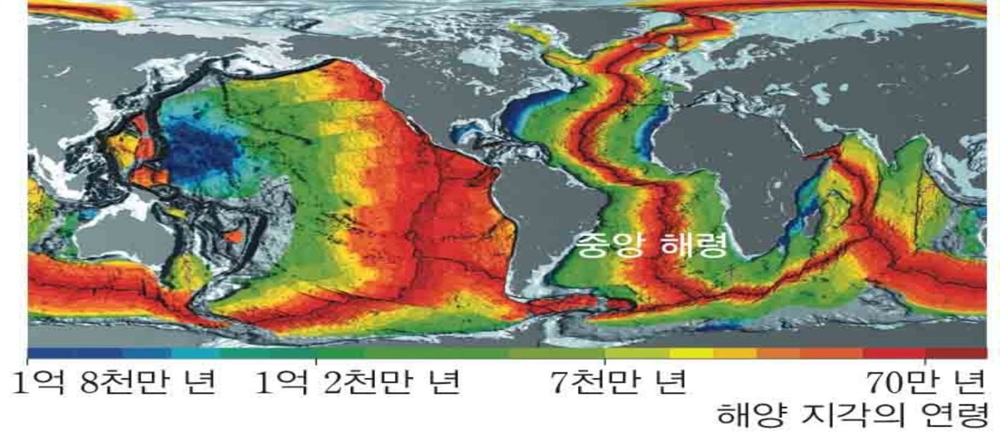
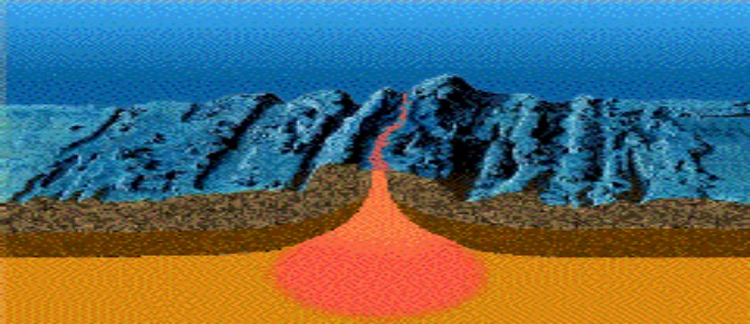
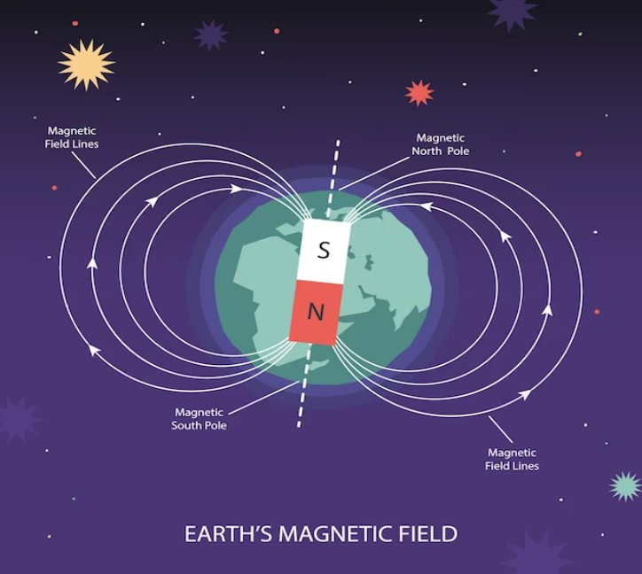
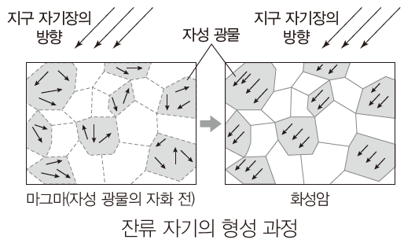
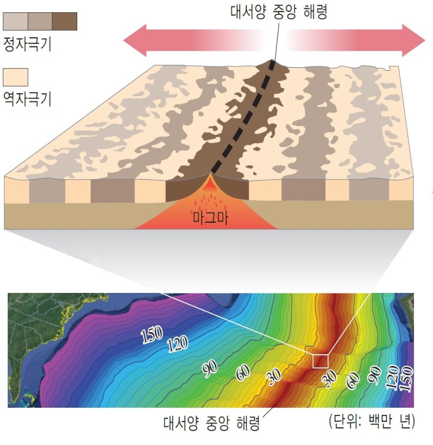
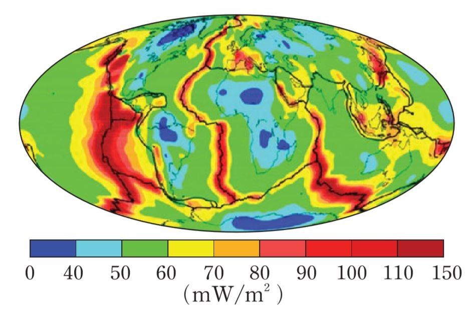
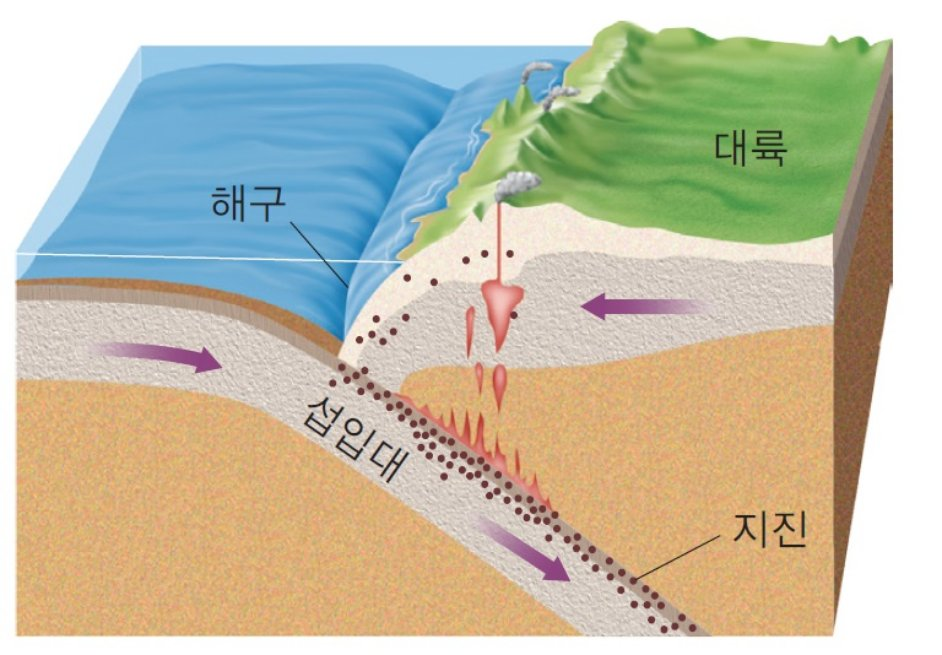
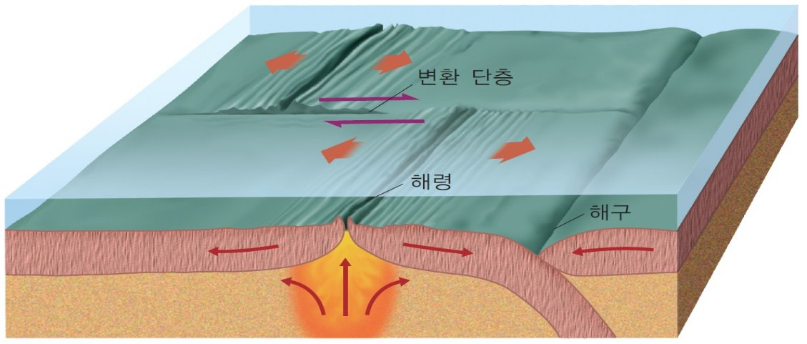

① 지난 시간에 남은 질문

홈스의 맨틀 대류가 맞다면, 바다 밑에는 어떤 흔적이 남아 있을까?
② 바다 밑 재기
배에서 음파를 쏘고, 해저에서 반사되어 돌아오는 시간을 재요.
바닷물 속 음파의 속력은 약 1500 m/s
왜 2로 나눌까? 음파는 바닥까지 갔다가 다시 올라와요.
| 위치 | 시간 (s) | 수심 (m) |
|---|
③ 해저 지형

대륙붕: 육지와 이어진 얕고 완만한 곳
대륙 사면: 대륙붕 끝에서 급하게 깊어지는 곳
대륙대: 대륙 사면에서 심해저 평원으로 이어지는 완만한 곳
심해저 평원: 수심 약 3~6 km의 평탄한 곳
해산: 심해저 평원에 솟은 산 (꼭대기가 평평하면 평정해산)
해령: 심해저에서 2.5~3 km 높이로 솟은 대규모 해저 산맥
열곡: 해령 한가운데 V자 모양으로 갈라진 골짜기
해구: 수심 6 km 이상인 좁고 긴 골짜기
④ 해령 주변 자료 읽기

해양 지각의 나이: 빨간색일수록 젊고, 파란색일수록 오래됨
해양 지각의 나이
해저 퇴적물의 두께
대서양 해령을 가로질러 조사한 결과를 단순화한 자료예요.
추론하기
⑤ 해양저 확장설
해양저 확장설
해양 지각은 해령에서 새로 만들어지고, 양쪽으로 넓어지다가 해구에서 사라진다.

해령 아래로 뜨거운 맨틀 물질이 올라와요
해령에서 해구까지
⑥ 고지자기 줄무늬 · 또 하나의 증거

지구 자기장: 지구 안에 큰 자석이 있는 것처럼 보여요

마그마가 식어 굳을 때, 자성 광물이 그때의 지구 자기장 방향으로 정렬된 채 굳어요.
지구 자기장은 방향이 여러 번 바뀌어 왔어요. 정자극기: 지금과 같은 방향 · 역자극기: 지금과 반대 방향
해령에서 굳은 지각마다 그때의 자기장이 기록되고, 양쪽으로 밀려나면서 해령을 중심으로 대칭인 줄무늬가 생겨야 해요. 시뮬레이터로 확인해 봐요.
고지자기 줄무늬 시뮬레이터
해수면에서 측정한 지자기 이상
정자극기 지각 위에서는 자기장이 조금 강하게(+), 역자극기 지각 위에서는 조금 약하게(−) 측정돼요.

실제 대서양 중앙 해령
⑦ 지각 열류량

지각 열류량: 지구 내부에서 지표로 빠져나오는 열의 양 (mW/m²)
⑧ 섭입대와 변환 단층

해구에서 해양 지각이 맨틀 속으로 비스듬히 들어가는 곳
이 경사면을 따라 지진이 일어나요.

해령과 해령 사이를 끊어 놓은 단층
해령마다 지각이 생겨 밀려나는 속도가 달라서 생겨요.